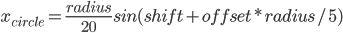
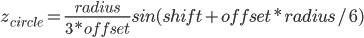
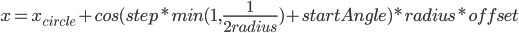

Tornado Simulation Report
Morgan H, Joshua C, Gabriel K, Alex Y
Abstract
This project sets out to create a realistic virtual simulation of a tornado. It uses a basic graphics engine and physics based system to emulate a tornado's nature. We build a graphics engine from the ground up, using OpenGL and various other libraries. In addition, we mathematically defined a function, through systematic trial and error, to control the particles to move in a tornado-like motion. All these particles in total create a visually realistic tornado.
Technical Approach
To start, the graphics engine was based on OpenGL, GLFW, and glm. These are low level libraries to directly communicate with the graphics card on the computer. Specifically, OpenGL renders the vertices, GLFW renders the output to a window, and GLM is a library to assist in vector and matrix operations, as well as other graphical helper functions. We give these libraries the set of vertices, matrix transformations, and shaders we want to compile. It then draws them on the screen accordingly. Because we control each vertex and lighting element, for our particle system, this means more control over the appearance and position, as well as higher performance. To learn how to use these libraries, we mainly used a website (learnopengl.com) to read tutorials.
Once we were able to draw a quad on the screen, we began by drawing many smaller quads to emulate a particle system. A game loop was created to control the FPS of the rendering loop so we can regulate the time transition of the system for realistic particle movement. Each time the render loop is iterated, we clear the scene, draw each particle as a quad, and render the scene. To have the quads look like particles, we made each quad always face the camera, so there was no sense of the particles having a 2d nature. This created the illusion that the particles were three dimensional, which is realistic.
Once we were able to render the particles, we then had to make them move. To do this, we designed an algorithm that controls the motion of each particle, such that each particle travels the path a typical particle would be believed to travel in a tornado. When all these particles are rendered together, it creates the visual of a tornado.
The tornado function, as it will be called, is periodic in nature. Despite each particle having a rhythmic nature, the tornado looks chaotic. This is due to the nature of chaos. When a lot of smaller controlled systems that are slightly out of phase are put together, to the observer, it is a completely un pardernistic system.
To do this, we must look at the attributes of a particle. In addition to a 3D coordinate, particles have a random starting angle, a radius, a random offset value [0.5,1.5], and a directional parameter. The radius is calculated as the particle’s initial distance from the scene’s origin.
The tornado function works as follows: Upon every loop, we calculate the center of the circle at which the particle is orbiting. This is done to build the core of the tornado, as a high level understanding of it is that the tornado is built as a series of circulating rings of particles following a wavy curve. This is accomplished using two sine functions, depending on the particle’s radius, to calculate the x and z coordinates of the circle’s center.


Shift is a term that’s incremented upon every iteration of the for loop to introduce a phase shift on the tornado and rotate the core.
In addition to this, the expected y-position of the particle is calculated as the square root of 144 multiplied by the particle’s starting radius. We use the basic formula to find the point on a circle given an origin, radius, and angle to calculate the next x and z-positions of the particle, that being

Where step is a value that’s incremented upon every iteration of the for loop. The min function makes it so particles further up the tornado spin slower, and the startAngle introduces a random starting position on the circle so that particles are evenly distributed.
Now we update the particle’s (x, y, z) coordinates, and then either increment or decrement the particle’s radius depending on its directional boolean value. This causes the particle to spiral upwards or downwards. If the particle reaches the top or bottom of the simulation area, the direction is reversed.
(Note that every numerical coefficient was decided upon what looked the best visually)
To enhance the visual experience, we made the camera able to move around the scene. This enables the observer to be able to get a better understanding of the system. This is also important, because in any realistic simulation, the viewpoint is likely not going to be fixed, so the tornado needs to look realistic from all positions.
Description of Problems
Since we decided to start from scratch, we ran into many setup issues from the get-go. Two of our team members were using Visual Studio on Windows, and the other two team members were using Xcode on Mac. To begin, the Windows team successfully followed the openGL setup tutorial to lay the foundation for the basic particle simulator. However, the Mac team was unable to reproduce the result on Xcode since all of the code on the repository was IDE-specific. Thus, as a solution, we decided to only put the core graphics files on the github repository and leave out the IDE-specific files. Each member would have their own IDE-specific files on their own personal computer, and would just pull the shared files as needed. While this was a little bit tedious at first, it ended up saving us a lot of time in the long run. This enabled each group member to be able to effectively contribute to the project as a whole.
After the setup was completed on both Mac and Windows, we ran into an issue with the camera’s starting and target position. While we had gotten to the point where we could successfully render particles on the screen, we had trouble figuring out the right place to position the camera, in addition to the right place that the camera should be pointing to. After much trial and error, we decided to position the camera at a slight offset to the origin. This worked for us since the particles themselves were centered at the origin, so the camera was able to accurately capture all of the particles in the tornado simulation.
Description of Lessons
The most valuable knowledge we gained was from setting up the graphics simulator on two different operating systems. Since all of our class projects were nicely setup for us, we never really had to worry about the painstaking steps that are taken to accommodate many different operating systems. Thus, by following the many tutorials to setup openGL on different IDEs and different operating systems, we were able to learn more about how the files are organized, how libraries are imported and utilized, and the efficient ways of setting up our code on github such that many people can collaborate and work on the graphics project at the same time.
In addition, we learned a lot about the different ways tornadoes can be simulated. For instance, some tornadoes have forces being applied to the particles to create the funnel-like cone shape. However, for ours, we have the particles orbit around a sine-like curve, simulating the look of a tornado.
Results
References
Vries, J. D. (n.d.). Learn OpenGL, extensive tutorial resource for learning Modern OpenGL. Www.Learnopengl.Com. Retrieved May 10, 2022, from https://learnopengl.com/
https://cs.uwaterloo.ca/~jwlwan/papers/WanDing05.pdf
Contributions
Morgan: Create window (GLFW), shader program, render loop, all opengl function calls. Camera and view model matrices. Make quads face camera. Keep the render loop at stable fps with sleep calls.
Alex: Fixed camera and tornado positioning. Created tornado function to give it its shape and spin.
Gabriel: Setting up openGL in Xcode on Mac, tornado particle simulation and polishing, moving the camera around with arrow keys, adding transparency to particles, making the tornado more dust-colored
Joshua: Initial setup on Windows, research on tornadoes
Final Project Video (link attached to video)